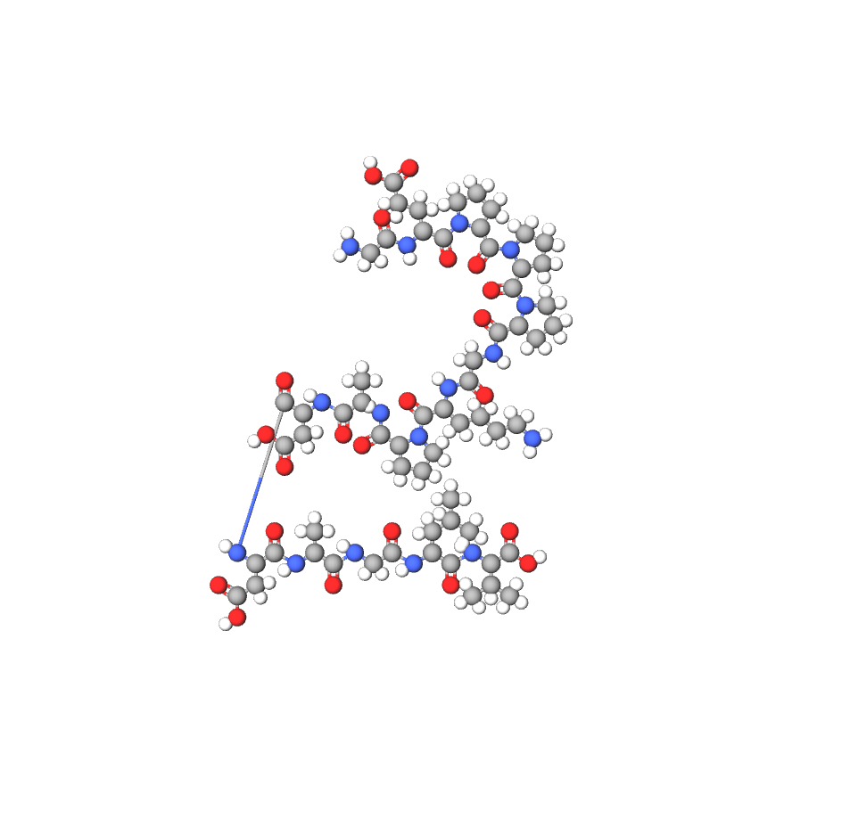

MOLECULAR COMPOSITION
C₆₂H₉₈N₁₆O₂₂
BPC-157
Healing Peptide • DO NOT CONSUME • FOR RESEARCH PURPOSES ONLY
Price Upon Request
SCIENTIFIC OVERVIEW
MECHANISM OF ACTION
BPC-157 is a synthetic pentadecapeptide derived from human gastric juice. It promotes angiogenesis, accelerates tissue repair, and modulates inflammatory pathways. It interacts with growth factors and supports collagen synthesis, contributing to improved wound healing and tendon/ligament recovery.
NEUROLOGICAL AND COGNITIVE PATHWAYS
- Supports neuroprotection in peripheral and central nervous system models
- May modulate neurotransmitter signaling related to pain perception
- Potentially reduces oxidative stress in neuronal tissues
RESEARCH APPLICATIONS
BPC-157 is under investigation for tissue repair, gastrointestinal tract healing, tendon and ligament regeneration, and neuroprotective effects. Preclinical studies show accelerated recovery from musculoskeletal injuries. For laboratory research only. Not for human consumption.
PHARMACOKINETICS
Half-life: Approximately 4–6 hours in animal models
Absorption: Rapid systemic distribution after subcutaneous or intraperitoneal administration
Clearance: Mainly hepatic metabolism, minimal renal excretion
STORAGE & HANDLING
Store lyophilized powder at 2–8°C. Once reconstituted with bacteriostatic water, maintain at 2–8°C and use within 14 days. Protect from light and avoid freezing. Handle with appropriate laboratory safety equipment.
Limited availability • Verification required
This website is only a catalog. Request product for payment directions and contact info.